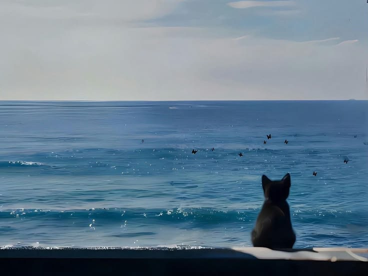

I'm a 19 year old building towards embodied AGI.
Right now I’m working on persistent memory systems for robots. Before that I did research on egocentric data for world action models, and worked on autonomous UAVs.
I'm currently studying mathematics and computer science at the University of New South Wales.
I love reading. My favourite books are:
> Pale Blue Dot (Carl Sagan)
> Norwegian Wood (Haruki Murakami)
> As I Lay Dying (William Faulkner)
> Dubliners (James Joyce)
> Kafka On The Shore (Haruki Murakami)
I believe that the north star for robotics is to make humanity a multiplanetary species.
You can stay updated on my latest work thru X